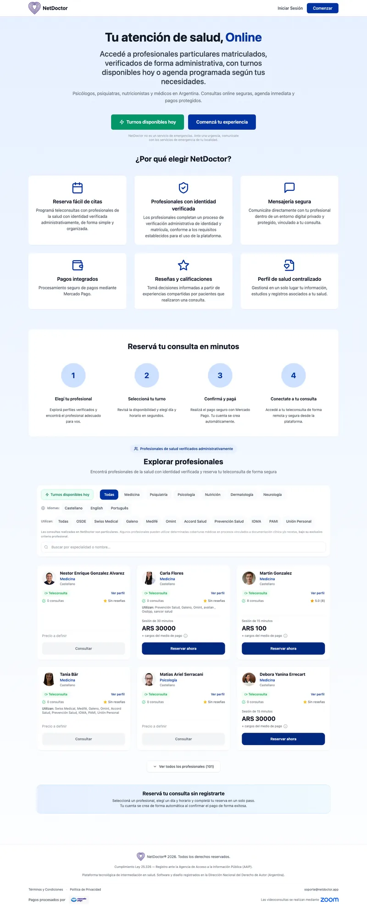
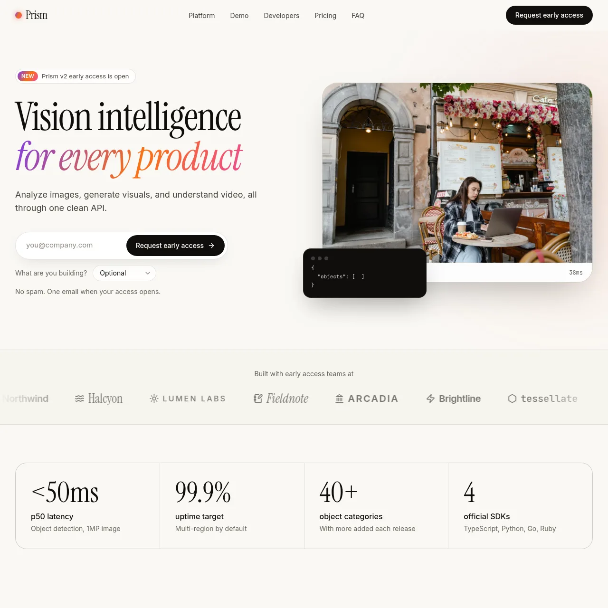
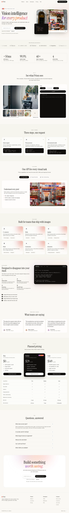

Read the storyVisit siteYour website, live in minutes
Describe your website in plain language and let Bolt do the rest. Create a ready-to-publish website in under two minutes.
Build a business website for a marketing agency with services, case studies, team bios, and a lead capture form.
- Free to start
- No credit card required
- No code website builder

A marketing site for my AI vision API with an early-access signupSaaSOpen in BoltPreviewBuilders are launching new sites daily
3.8M+
websites created
<2 min
avg. build time
4.8 / 5
user rating
Zero
coding required
How it works
Bring your idea to life instantly
Describe what you want and Bolt builds it in minutes.
Example prompts
Start with a prompt like these

What makes it different
Everything your website needs is built-in
You prompt, Bolt's AI handles the rest, from responsive layout to live deployment.
01
Go live in minutes
Type a prompt, watch the code generate in real time, preview it instantly, and deploy to a public URL.
02
Describe your design
Every generated website is unique to your prompt. Describe the aesthetic, colors, and layout you want and the AI applies it or iterate from the code editor.
03
Responsive by default
Mobile, tablet, and desktop layouts are handled automatically. Every website created by Bolt works on any screen without extra work.
04
Edit code in the browser
All generated code lives in a full browser-based IDE. Adjust AI generated code directly or keep prompting, Bolt will apply changes without breaking what's working.
05
Deploy in one click
Bolt publishes to a live URL automatically. Connect a custom domain in minutes, no server management, no DevOps required.
06
Get full-stack support
Need a contact form with a backend, or a CMS? Bolt can generate APIs, databases, and auth flows in the same project.
Built with Bolt
Websites people have built with Bolt
Real businesses, live on the web. Every one started as a prompt.
What's included
What every website includes
- Persistent database storage
- Secure sign-up and login
- Automated backend functions
- Version control and history
- Secure environment variables
- Structured iterative building
- Consistent design system
- Deployment and hosting
“We were paying $70,000 a year for EDI software, so we had Bolt build our own. Two days in, I knew it would work. What would have taken years and a fortune in development was live in weeks, and ten carriers are now paying us every month.”
 Paul LavioletteFounder, TradeWeave
Paul LavioletteFounder, TradeWeave“I started out just wanting to experiment with AI, and almost immediately I could see how well Bolt understood what we were going for. Flag football is exploding, and we now have customers in eight states and 50,000 pageviews in two months.”
 Bradley MetrockFounder, FlagStat
Bradley MetrockFounder, FlagStat“I acquired a golf-simulator store and the operations were a mess. We replaced a dozen separate tools, like Quo, Tidio, and QuickBooks, with one system built in-house, and the storefront was landing high-ticket sales in its first week.”
 Sky LubreskiFounder, Ecom Command Center
Sky LubreskiFounder, Ecom Command Center“We needed off WooCommerce. The new store is so much faster that the whole team breathed a sigh of relief, our email campaigns are easier to run, and we’ve been winning back about 10% a month.”
 Michael MastropasquaAgency/freelancer, Ole Florida Fly Shop
Michael MastropasquaAgency/freelancer, Ole Florida Fly Shop“I’d been quoted 80 to 90 thousand dollars just for the MVP. With Bolt I described features in plain English and watched them come to life in minutes. I launched a beta and 100 people signed up in the first week.”
 Jai SainiFounder, Ginger Pulse
Jai SainiFounder, Ginger Pulse“Bolt let me play with ideas that used to be out of reach. I built a working lean-improvement tool and founded a company around it. On my own it would have taken thousands in investment and a team.”
 Charles RevillFounder, E.L.I
Charles RevillFounder, E.L.IFAQ
Questions about building websites with Bolt
No. Bolt.new generates the full website code from a text prompt. You describe what you want and the AI builds it. You can review, edit, and deploy without writing a single line of code yourself.
Most websites are generated in under two minutes. Websites with more complex features, such as sign-up, login, and databases, take around five minutes. The more you add on to your website, the longer it will take but you can do that over time as you iterate and enhance your website.
Yes. Every generated website includes a full browser-based code editor. You can modify layout, logic, content, and functionality by typing follow-up prompts or editing the code directly.
All Bolt.new websites are generated responsive by default. Your website will look sharp on desktop, tablet, and mobile without any extra configuration.
Bolt.new generates modern web websites using React, Vite, Tailwind CSS, and Node.js by default. You can also request other stacks or frameworks in your prompt.
Build your website right now
Sign up for free and have your website live today.
- Free to start
- No credit card required
- No code website builder